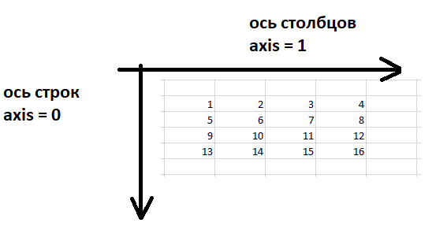
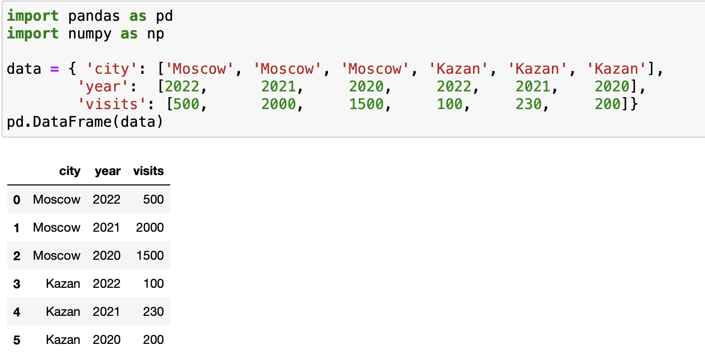
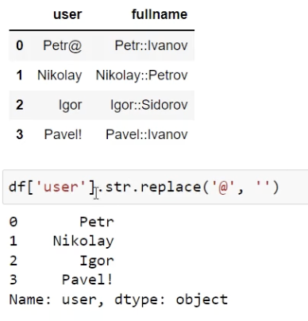
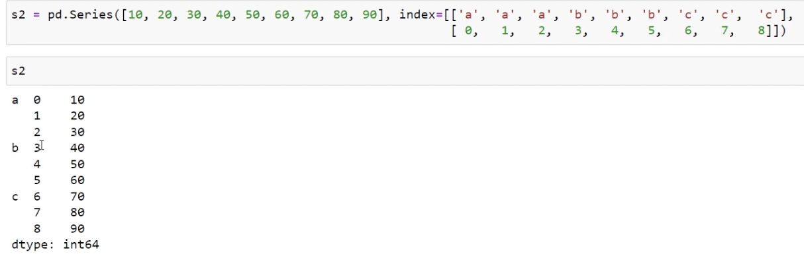
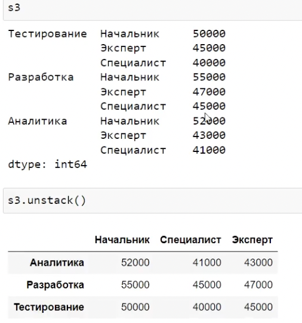
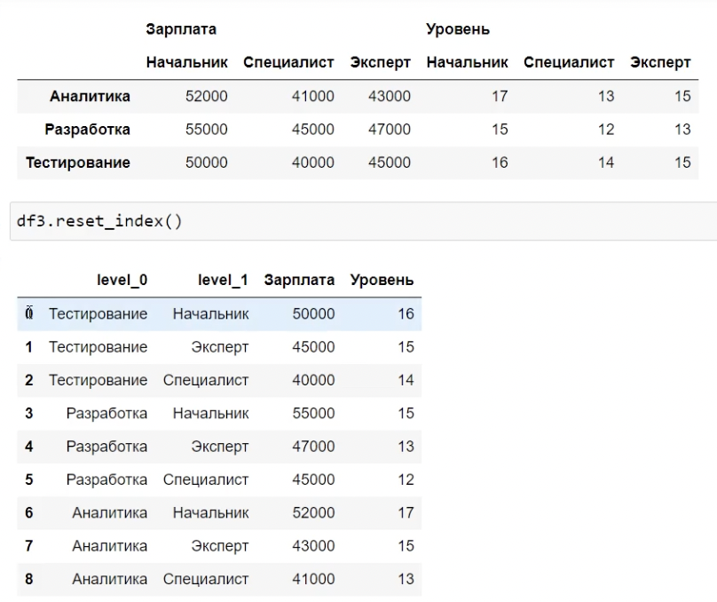
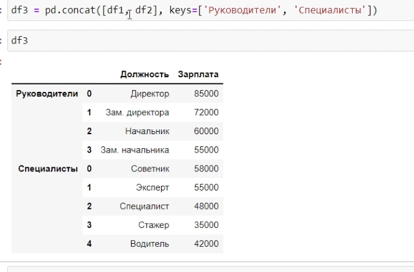
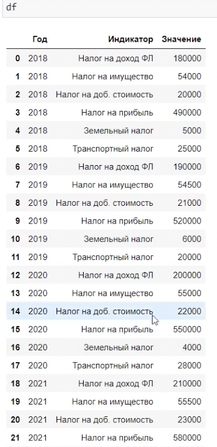
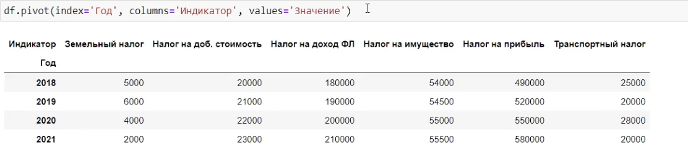

Numpy
Для началы работы нужно импортировать Numpy. Делается это при помощи команды import numpy as np
np.array(['какой-то лист']) - поздравляю, мы получили первый массив.
Функция len выводит кол-во вложенных списков
md.shape([[1,2,3],[1,2,3]]) = (2 , 3) - кол-во подмасивов, и колличество элементов в каждом подмасиве
md.dtype = (float64) - показывает, что все элменты являются типами floaat 64 (возвращает тип данных в
массиве)
np.zeros(5) - отдает массив, с 5-ю нулями
np.zeros((2, 3)) - отдает массив [[0,0,0],[0,0,0]] - двухмерный массив
np.ones(4) - создает массив с 1-ми
np.arange(10) = (0,1,2,3,4,5,6,7,8,9)
np.full((2,3),8) - 2x3 массив со всеми значениями 8
md = np.array(lst, dtype='float64') - на основе существующего списка создает numpy массив с типом
float64
md = arr1.astype(np.int64) - переписывает массив на массив с элментами типа int64
md - 1 = Из каждого элмента списка вычтет - 1 (т.е заменяет цикл)
a = [1,2,3]; b = [2,3,4]; a > b = [False, False, False] - возвращает маску
Срезы
md[3:5] - берет 3 и 4 значение из масиваmd[: , 2] - мы идем по каждому поднмножеству, и оттуда берем 2 элемент
md[: , 1:3] - мы идем по каждому поднмножеству, и оттуда берем 1 и 2 элемент
md[0:2 , 1:3] - мы берем 2 множества (1 и 2), и оттуда берем 1 и 2 элемент
~mask - инверсия (то что было True стало False)
| - или, & - и
md[[0,2,4]] - вытягивает 0, 2, и 4 строку. Нужно передавать спиоск !
md[[0,2,4],[1,3,5]] - из 0 колонки берет 1 элмент, из 2 колонки 3 элемент и т.д.
md.reshape((10,5)) - делает из одномерного массива из 50 элементов, массив с 10 подмасивов, с 5 элементами в каждом. Не создает новый массив, а трансформирует старый !
md.T - делает трансформацию (строки в столбци)
Поэлементная работа
np.sqrt(md) - извлекает квадратный кореньnp.abs(md) - делает абсолюьные значения
np.round(md) - округление
np.ceil(md) - округление вверх
np.floor(md) - округление вниз
np.maximum(md1, md2) - возвращает новый массив, с максимальными элементами на каждом индексе
np.add(nd1, md2) - складывает элементы (суммирует)
np.subtract(nd1, md2) - вычитает элементы
np.where(условие, да, нет) - к примеру np.where(md > 5, 100, md)
np.where((md > 5) | (md = 2), 100, md)
md.sum() , md.mean() - сумма всех элементов, среднее значение
Параметр axis=1 or 0, отвечает за строку или столбец соответственно

md.any() - проверяет маску, есть ли хотя бы 1 True
md.all() - проверяет маску, что все значения True
md.sort() - сортирует, принимает пармаметр axis
np.unique(md) - возвращает список уникальных значений
np.in1d(md, ['андрей','вася']) - проверяет, есть ли эти данные в массиве (возвращает бул. маску)
Рандом
np.random.randint(1,10,5) - мин. значение, макс значение, кол-во элементовnp.random.pemutation(10) - делает ожномерный массив из 10 перемешенных элементов
np.random.shuffle(md) - меняет все порядок эдементов. Не делает новый
Сохранение
np.save('my_file', md) -название файла, и сам массив который нужно сохранитьnp.load('my_file.npy') - для чтения, не забываем указывать расширение
np.savez('my_file', name1=md, name2=md1) - сохраняет несколько массивов
md = np.load('my_file.npz') ---- md['name1'] - вытаскиваем по ключу
Pandas
Для началы работы нужно импортировать Numpy. Делается это при помощи команды import pandas as pd
s1 = pd.Series(['какой-то массив']) - делает из массива серию с индексацией (0, 1, 2, 3 ....)s1.values - возвращает значения Серии
s1.index - возвращает индексы Серии
s1 = pd.Series(['какой-то массив'], index = ['a','b','c']) - создает Серию с нашими индаксами
s1['c'] - вытаскиваем значение по индексу
s1[['a','b']] - берет значения по индексу 'a' и 'b'
Удобнее делать Серию из словаря, где ключи - индексы, значения - значения
pd.isnull(s1) - проверка на пропуски. Возвращает True если значение пропущено (Nan)
DataFrame
df = pd.DataFrame(s1) - создаем DataFrameДатафреймы очень хорошо создаются на основе словаря, который состоит из ключей и значений в качестве вложенных списков. Ключи словаря в датафрейме станут названиями столбцов, а вложенные списки - колонками.

df2 = pd.DataFrame (data, columns-['visits', 'city']) - явно указываем, какие колонки (столбцы) нам нужны
df2['city'] - даст серию колонки 'city'
df2['total_time'] = df2['city'] * df2['visits'] - создаем новую колонку 'total_time' (если мы хотим вставить значения из Серии, нужно следить, что бы были одинаковые индексы) ^^ совет, так-же следим за типами индексов ^^
del df2['clicks'] - удаляет колонку с названием ...
df2 = df2.rename(index={1: 'one'}) - заменить индекс 1 на 'one'. Можно так-же передать columns
result = df2.shape - определяет количество строк и количество столбцов в датафрейме
df.index , df.columns - дает информацию о индексах и колонках
df = df.reindex(['city', 'visits'], axis=1) - получаем DF с данными колонками (если нужны по строка, то axis=0). Если указать несуществующую колнку, то она будет заполнена NaN
df.drop(‘’) удаляет по строке, и возвращает НОВУЮ копию (можно регулировать по axis - по умолчанию 0 )
Параметр inplace=True, т.е сделать прям на месте, не присваивать новой переменной !
Срезы здесь работают как и в Numpy, только указываются индексы
Если нам к примеру, нужно вывести пользователей, которым больше 30 лет, то
result = df[df['age'] > 30]
Операторы loc, iloc, at, iat
df.loc['e'] - Оператор loc используется для вытягивания данных из датафрейма на основе лейблов (индекс строки)!Обязательно после loc указывать квадратные, а не круглые скобки!
В скобках: слева от запятой лейблы строк, справа от запятой лейблы столбцов.
df.loc[['a','e'],['name','age']] - вытаскивает строки с индексами a,e по столбцам name, age
То-же самое предстваление делается при помощи оператора iloc, который работает с индексами ! т.е. запись df.loc[['a','e'],['name','age']] = df.iloc[[0,4],[0,1]]
df.at['b', 'name'] - может принимать только одну строку и один столбец в качестве входных аргументов. (разница с loc в скорости)
Сложение, сортировка, пропуски
df1.add(df2, fill_value=0) - сложение 2 датафреймов, если где стоит NaN, будет заменен на 0, для сложения. (к примеру 200 + NaN = NaN, теперь же 200 + NaN = 200)Функции ниже ничего не записывают в датафрейм. Они просто пытаются выполнить свою работу и если одно из слагаемых NaN, тогда оно подменяется на значение из параметра fill_value. Если и и там будет NaN, то тут уже не сработает.
df.sort_index(ascending=True) - новый DF, отсортированный по индексам от меньшего к большему (наоборот False), принимает параметр axis
df.sort_values(by='age') - по значениям в столбце age (за это отвечает параметр by). Если нужно выбрать несколько столбцов by=['age', 'balance']
Параметр na_position='first' (пропущенные значения идут 1)
Статистика
df.sum() , df.mean() - дает сумму и среднее значение всех значений DF по столбцам. Можно регулировать axisПарметр skipna=False - если есть пропуск Nan, выдаст NaN
df.describe() - выводит статистику по каждой колонке
df.value_counts() - функция возвращает серию, которая содержит количество для каждого элемента
df['name'].unique() - серия из уникальных имен (т.е отдает список, где встречаются все имена по 1 разу)
Основы работы с Pandas
Работа с источниками данных
CSV - comma separated values
df = pr.read_csv('example.csv', параметры ) - читаем csv файл. Получаем DF (читаем как через относительный путь, так и через абсолютный ("C:/example/:user_data.csv"))Параметры
- sep=';', указываем, что в нашем csv файле разделителем является ;
- header = None - указываем, что у нас нет названия колонок (параметр указывает функции read_csv не вставлять первую строку из файла в заголовок датафрейма, а создать названия колонок автоматически)
- names = ['name', 'balance', 'age'] - передаем названия колонок
- index_col = 'name' - указываем, какая колонка должна стать индексом (можно указать несколько колонок 'мультииндекс') (index_col=0 - 0 колонка будет индексом)
- skiprows = [0,4] - пропускает 0 и 4-ю строку (не читает их)
- na_values = [-1] - будет считать значение -1 за пропуск ({age : -1} - для колонки age считать за пропуск -1 )
- nrows = 10 - прочитать первые 10 строк файла
- chunksize = 2 - при помощи цикла for читать по 2 строки (chunk - кусок)
- read_csv(..., encoding='windows-1251') - указываем кодировку
Параметры
- sep=';' - указываем разделитель ;
- na_rep = 'Null' - вместо пропусков поставит значение 'Null'
- columns = ['name','age'] - перечисляем колонки, которые нам нужны
- index = False - сохраняем без индексов
- header = False - не сохраняет 1 строку с названием колонок
Json
df = pd.read_json('') - чтение файлаdf.to_json('') - сохранение файла
Параметры
- orient='records' - представляет каждую строку в отдельный словарь
Пример:
url = r'https://stepik.org/media/attachments/lesson/755302/data-399-2022-07-01.json'
r = requests.get(url)
data = r.json()
Дополнительно
_lst = pd.read_html('вставляем сслыку сайта или скачаную страничку')_lst[0] - берет 1 таблицу с сайта (ищет теги на странички сайта, и за нас создают таблицу)
df.to_pickle('куда сохранять') - сохранение данных в формате pickle (сохраняет место)
store = pd.HDFStore('путь.h5') - создаем базу данных с ключами
store['users'] = df2 - сохраняем по ключу 'users' DF
Exel
df = pd.read_excel('путь файла')Параметры
- sheet_name = 'Лист2' - читаем 2 Лист
df1.to_excel(ew, sheet_name='S1')
df2.to_excel(ew, sheet_name='S2')
сохранеям 2 Df на 2 страницах в 1 файле Exel
Чистка и подготовка данных к анализу
Пропуски
s[~s.isnull()] - получаем DF без пропусков
s.dropna() - удаляет пропущенные значения из Серии
df.dropna() - удаляет полностью строку, если есть хотя бы один NaN. Принимает параметр axis (по
умолчанию = 0 - идет по строкам)
df.dropna(how='all') - удаляет полностью строку, если все значения NaN. Принимает
параметр axis
Параметр (thresh = 2) - 'порог' указываем, что в строке должно быть как минимум 2 непустых
(непропущенных) значения
Параметр (subset=['A','C','D','G']) - будет выполнять работу только в этих колонках
Дубликаты и избавление
df.fillna(0) - заполняет в DF пропуски 0. Возвращает новый DF
df.fillna({1 : -1, 2 : 0}) - для колонки с названием 1 пропуски заполнить -1, а для колонки '2' заполнить
пропуски 0
df.fillna(method='fill - вперед идущие значения' or 'dfill - заполняет назад идущие значения') - заполняет
пропущенные значени предыдущим значеним по колонке
Параметр limit=1 - заполнит только по 1 пропущеному значению в каждой колонке
df.duplicated() - дает маску со значениями true, false, встречалась ли эта строка раньше или нет
df.drop_duplicates() - удаляет дубликаты ранее встреченой строки. Возвращает новый DF. Чтобы удалить дубликаты в конкретных столбцах, используйте subset
Df.drop_duplicates(['name'], keep='last') - удаляет дубликаты строк, опираясь только на колонку 'name', оставляет последние значения !
Параметр keep у функции drop_duplicates очень важен и вы часто будете его задавать!
Он определяет, какие дубликаты (если они есть) нужно сохранить. Вот значения, которые может принимать параметр keep:
- first : удалить дубликаты, кроме первого вхождения.
- last : удалить дубликаты, кроме последнего вхождения.
- False : удалить все дубликаты.
df['name'].map(handle) - передаем функцию, которая возвращает нам новое значение
Группы
df.replace([-9, -8], np.nan) - меняет значение -9 и -8 на Nan
df.replace([-9,-8], [0,1])
df.replace({-9:0, -8:1})
bi = [-1,5,8,10] - явно задаем интервалы6 по которым хотим разбить значения
names = ['Плохо','Так себе','Отлично'] - названия групп
result = pd.cut(s1, bi, labels=names, right=False) - s1(хрантяся данные), и идет разбивка данных на группы
return pd.value_counts(result) - смотрим по значениям
Выброс
mask = (df['test3'] > 1) | (df['test3'] < -1) - ставит True or False.
df[mask] - выведет две строки, с выбросами
mask.any() - идет по столбцу, если есть хотя бы один True, выдаст True
mask.any(1) - идет по строке ...
np.sign(df) - ставит 1 где значение больше 0 и наоборот
mask = df['site_visits'] < 0
df[mask] = 0 - зануление значений, которые меньше 0
Матрицы фиктивных переменных
M = Pd.get_dummies(df[‘name’], prefex=‘имя’ - указывает перед название откуда взялось) - создает фиктивную
матрицу по столбцу name. Выполняет преобразование категориальной переменной в фиктивные/индикаторные
переменные


df.join(m) - склеивает обе матрицы ( по лейблам)
очень полезная ссылка !
Работа со строками
df[‘name’].str.replace('','') - представляет как строку, и делает замену

Почему не использовать функцию map ? map выдаст ошибку если значение будет отсутствовать, при replace
Nan пропускается
Объединение данных и преобразование формы

ds.unstack() - делает из мультииндекса стандартную индексацию ('разложить')
df.stack() - противоположная unstack()
df.swaplevel(0,1) - меняет уровни индексов местамиdf.sort_index(level=0) - сортировка по индексам 0 уровня
df.reset_index() - преобразование в обычный DF

pd.merge(df1, df2) - соединение 2 DF в один
Параметры
- on='Должность' - явно указываем названием колонки, по которой произойдет объединение
- how='left' or 'right' - вне зависимости, есть ли в правом DF значение, возьмет значение из левого
- left_on='Должность', right_on='Должность2' - задаем название колонок, по которым нужно соединить
- right_index=True - т.е из правого DF он возьмет колонку с индексами
- how='outer' - берет значения из обоих DF. how='inner' - по умолчанию
df= df1.join(df2) - объединение происходит автоматически по индексам. По умолчанию how='outer'
Если есть одинаковые колонки, нужен параметр lsuffix = ‘l’, rsuffix=‘r’
- other: Обязательный параметр. Это DataFrame или объект, который нужно присоединить.
- on: Столбцы в текущем DataFrame и объекте, которые будут использоваться для соединения. Это должны быть одинаковые столбцы в обоих объектах. Если параметр on не указан, Pandas попытается использовать все общие столбцы.
- how: Тип объединения. Это может быть "left", "right", "outer" или "inner". По умолчанию how = 'left'.
- "left": Используются все строки из левого DataFrame и только совпадающие строки из правого DataFrame.
- "right": Используются все строки из правого DataFrame и только совпадающие строки из левого DataFrame.
- "outer": Используются все строки из обоих DataFrame.
- "inner": Используются только строки совпадающие в обоих DataFrame.
- lsuffix: Суффикс для добавления к именам столбцов в левом DataFrame, если они имеют одинаковые имена с правым DataFrame.
- rsuffix: Суффикс для добавления к именам столбцов в правом DataFrame, если они имеют одинаковые имена с левым DataFrame.
- sort: Сортировка объединенного DataFrame по значениям столбцов. По умолчанию sort = False.
- ignore_index: Если установлено значение True, новый DataFrame будет иметь индекс, который не зависит от исходных индексов из объединяемых DataFrame. По умолчанию ignore_index = False.
pd.concat([df1,df2], ignore_index = True) - приклеиваем DF снизу, делаем индекс общим

s1.combine_first(s2) - если в s1 значение пропущено, берет его из s2
df.pivot() - преобразует из длинной 'таблицы' в 'широкую'
 